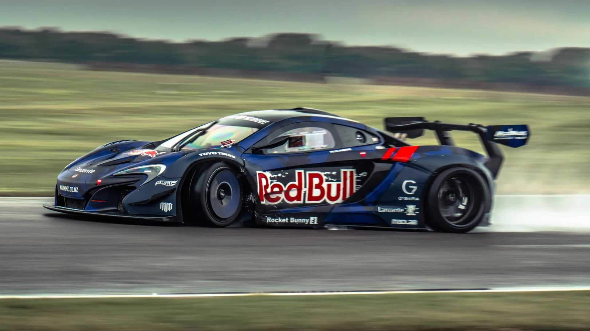
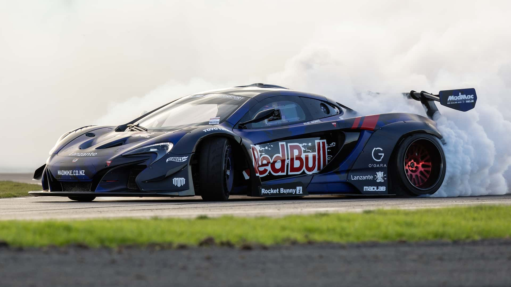

McLaren de Drift

Conheça a P1 de 1000 CV com 3 rotores

Conheça a Historia do Carro

Histórico do carro
Whiddett tem um forte relacionamento com a Mazda e tem feito drifting em motores Mazda desde que começou em 2007 em um Mazda RX-7 . Todos os seus carros foram nomeados de forma semelhante, incluindo:
NIMBUL, um Lamborghini Huracan com um kit de carroceria Liberty Walk e Fi EXHAUST, produz aproximadamente 800-900 HP
MADBUL, um Mazda FD RX-7 com um rotor quádruplo 26B, motor naturalmente aspirado. O MADBUL recebeu um novo visual em 2017 para ter carroceria frontal RX-3 e renomeado MADBUL 7.3 devido à sua combinação de design de RX-7 e RX-3
BADBUL, um Mazda RX-8 com motor turbo de três rotores 20B
HUMBUL, um Mazda FD RX-7 com um rotor quádruplo 26B, motor biturbo
RADBUL, um Mazda NC MX-5 com um rotor quádruplo 26B, motor biturbo
RADBUL Gen2, um Mazda NC MX-5 com painéis de carroceria ND MX-5 [ 10 ] e um motor quad rotor 26B, turbo duplo
RUMBUL, um Stadium Truck baseado no Mazda B2000 com um motor de rotor duplo 13B naturalmente aspirado
Mazda 787D, um carro de drift personalizado baseado em um Mazda 787B com o primeiro motor de 5 rotores do mundo.
MADMAC, um McLaren 650S personalizado com kit de carroceria Rocket Bunny baseado no Mclaren 650 GT3 na frente e no McLaren P1 GTR na traseira, e um motor 20B de três rotores.
BULLET, um Mazda3 (BP) 2022 com motor quad rotor 26B.
Ele também é dono de um Mazda REPU com motor de rotor duplo 13B chamado PITBUL. E um Mazda Luce Sedan configurado para levar até 3 passageiros chamado MADCAB.
O carro do projeto atual de Whiddett é um Mazda 3 (BP) 2022. Ele contará com um motor Wankel de quatro rotores com 1.200 hp e está sendo desenvolvido para correr na famosa Pikes Peak International Hill Climb em comemoração ao 100º aniversário da corrida.